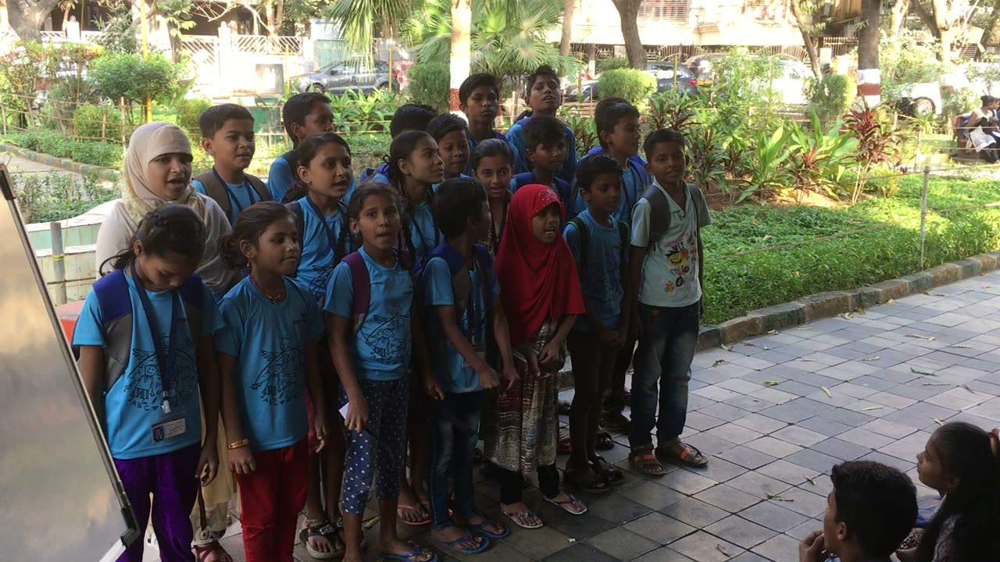

Confidence moves test scores.
Life skills, culture and outdoor days gave children a place to belong, and their assessment results rose with it.

Building systemic change · Under-resourced communities
Angel Xpress Foundation, Mumbai · 2015–2019 · Centre Head
The journey
2015 → 2026
Sources: Angel Xpress Foundation annual reports and 2026 progress report; funding via Give.do, converted at ₹85 to US$1.
The model
On the core team, I worked with the founders and fellow centre heads to build the repeatable frameworks Angel Xpress Foundation still runs on.
Problem
of children joined at or below kindergarten level, whatever their school grade.
Insight
Teach to level, with a system strong enough for volunteers with no teaching background to deliver.
The loop, for every child
Tested on entry, placed by ability, not school grade.
Five children per volunteer, at their own level.
Progress checked monthly, so no child moves on too early.
The foundation
The results
Learning gains and pass rate 2025-26, baseline to endline. From Angel Xpress Foundation annual reports.
Angel Xpress Foundation
Life skills, culture and outdoor days gave children a place to belong, and their assessment results rose with it.
A stipend turned goodwill into commitment.
Exceptional children became mentors at the centre, and responsibility made them even more driven.
A standard curriculum let first-time teachers deliver consistent lessons as we grew from 8 to 17 locations.
My journey through the years